Hello! I'm Kayla. I'm currently in grade 10, and I'm an avid
baker, reader, artist, and robotics enthusiast. I have been on FRC
team 5406 Celt-X for two years now as a programmer and I was the
operator of the robot, which means I got to push a bunch of
buttons! I love muted colours, especially
brown and
green. I hope to start some new projects this summer and expand my
knowledge of electronics and programming as a whole. I currently
know Java and I'm in the process of learning Python, HTML and CSS.
Thank you for stopping by!
Kayla Presents
About Me
Interests
Robotics
I'm on Bishop Ryan's robotics team 5406 Celt-X. Celt-X is an FRC team, which basically means that we compete in the FIRST Robotics Competition for highschool students. FIRST stands for For Inspiration and Recognition of Science and Technology. Each year, students from all over the world build 125lb robots that travel 13 ft/s and perform specific tasks while playing in a 3v3 on a basketball sized field.
Reading
Ever since I was about 7 or 8, wherever I was, a book was near. I would read just about anything with words, although I've always been partial to anything fantasy, dystopian, or anything fairy tale esque. If I can't experience magic in reality, I might as well surround myself with the next best thing.
Baking
I've recently gotten into baking, and it's been a great way to experiment while making things for others (and me!) to enjoy. I love the simplicity of following the instructions while still having the ability to alter things to better suit you. My next goals would be to work on my cake making + decorating, and start a sour dough starter.
Gallery
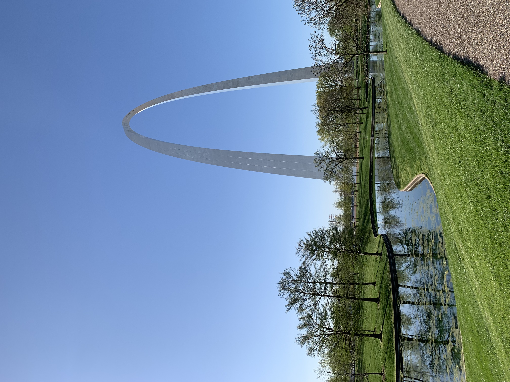


 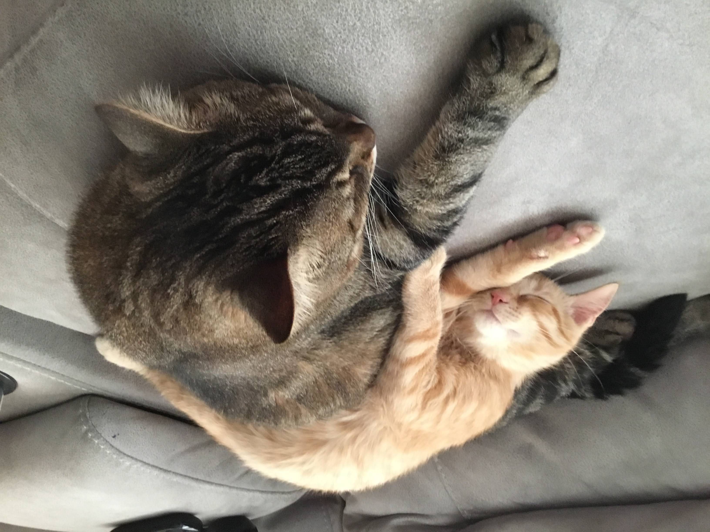
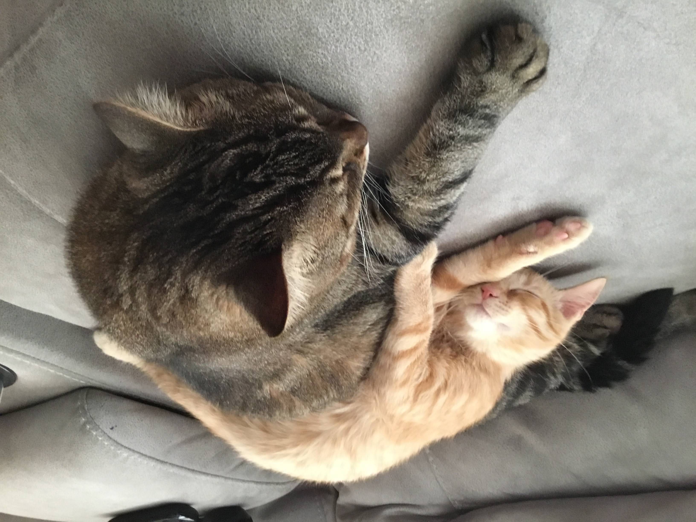
 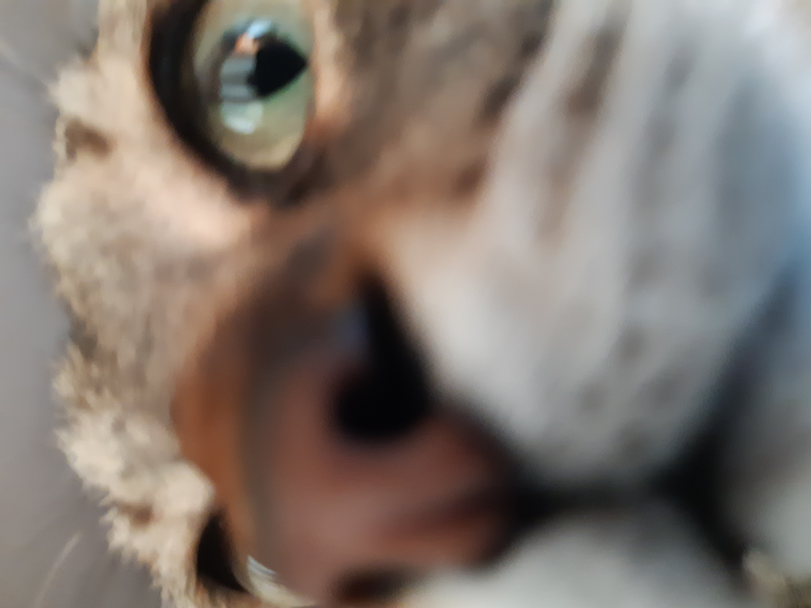
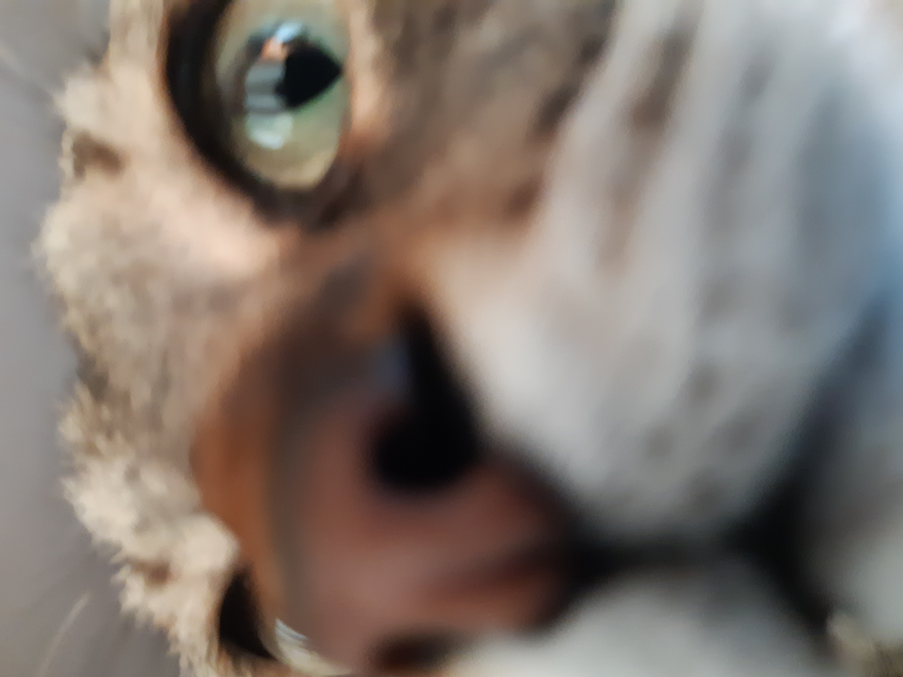
 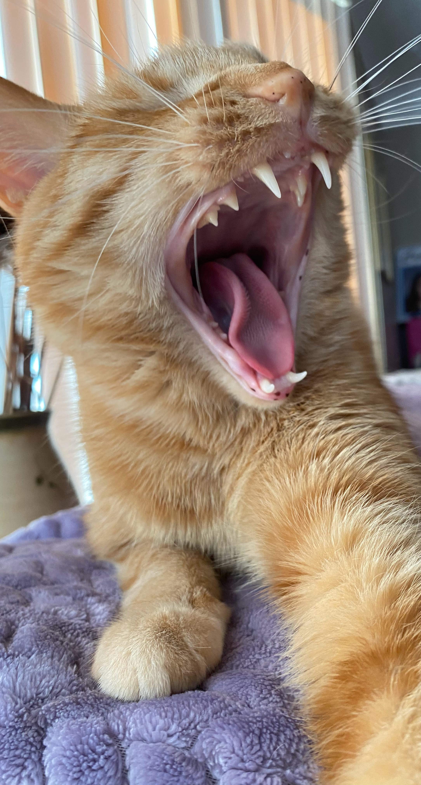
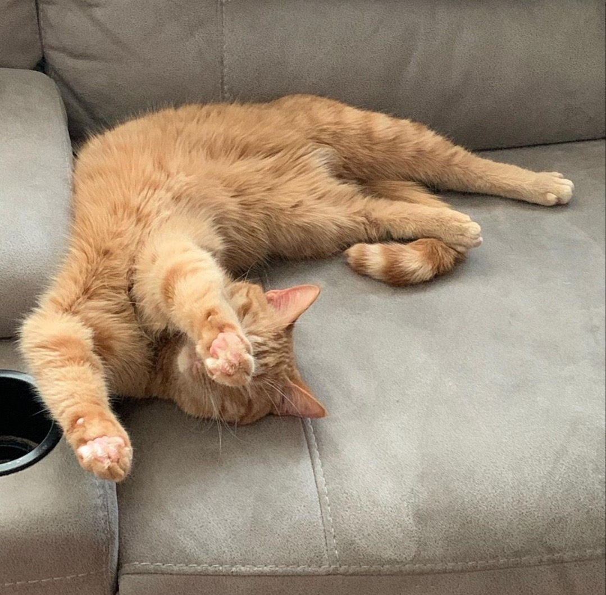
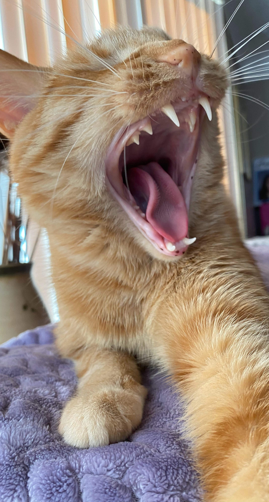
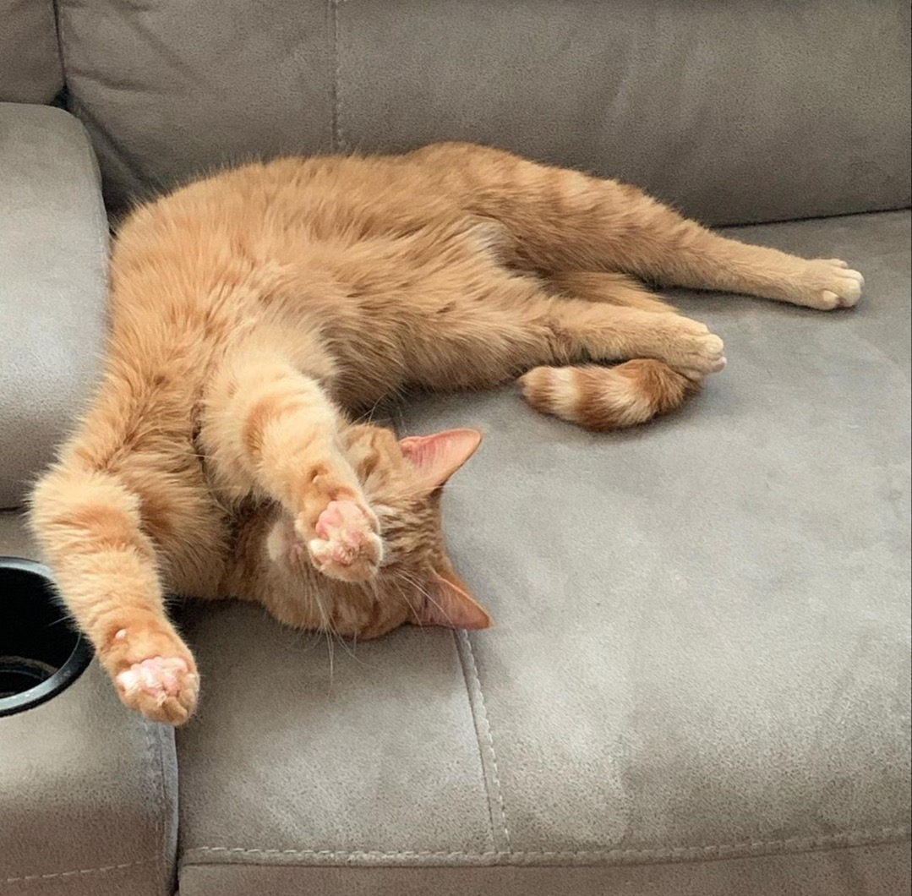
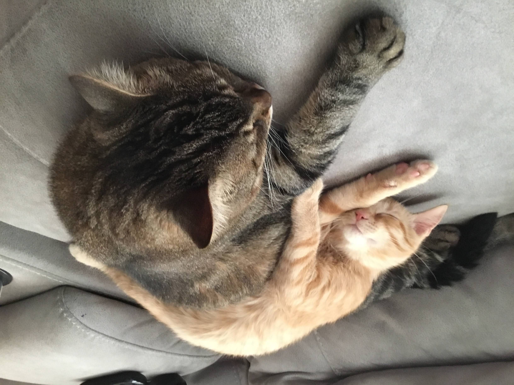
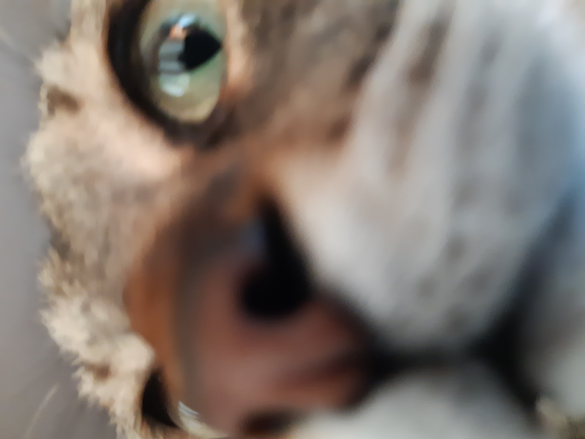
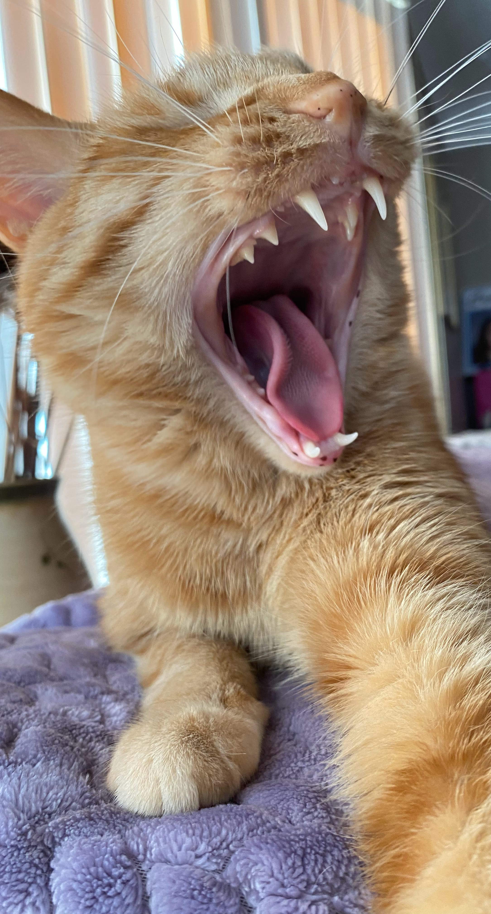
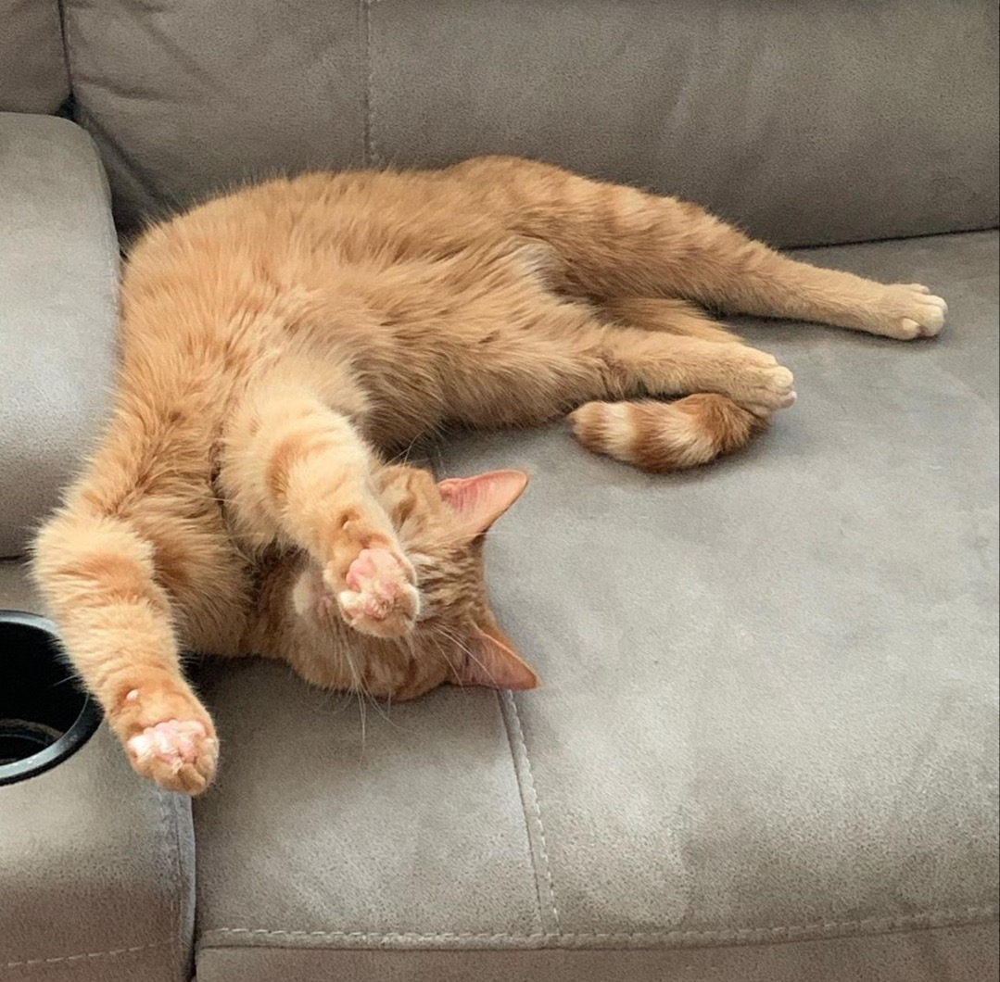
Computer Engineering Projects
I've done a lot of really cool stuff in TEJ201, including creating this portfolio website! Besides this website, I've:
It's a really fun and interesting course! I would definitely reccomend taking it if you can :)